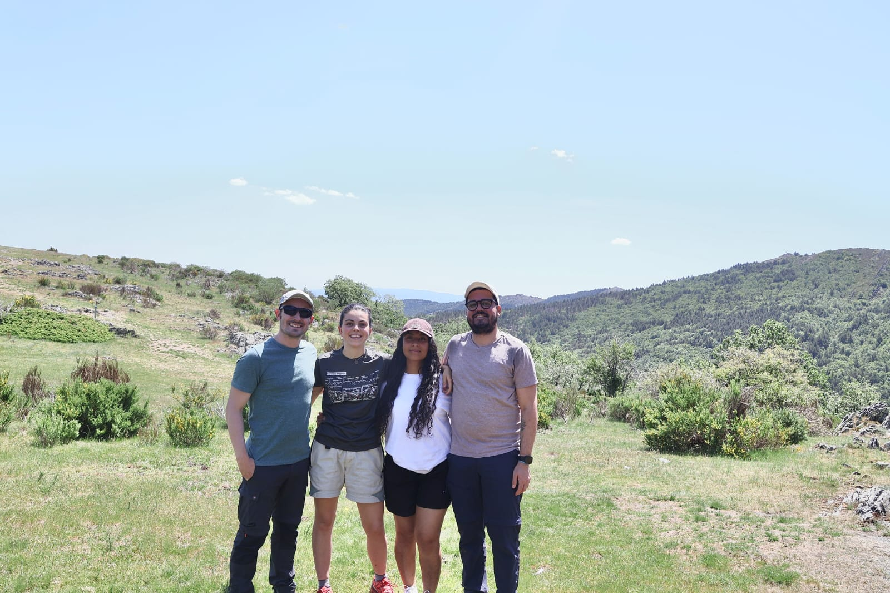

Pablo Muñoz-Rodríguez
Ramón y Cajal Researcher
Universidad Complutense de Madrid
I am a scientist working on the taxonomy and systematics of poorly known tropical plant groups, mainly morning glories (Ipomoea, Convolvulaceae) and Acalypha (Euphorbiaceae), with a focus on the origin and evolution of the sweet potato and other plants of economic interest.
I lead a small research team at Universidad Complutense de Madrid, Spain, and collaborate with researchers worldwide, working not only on plant taxonomy but also across disciplines that enhance our understanding of the natural world. Our work integrates taxonomy with phylogenomics, aiming to better understand the world's biodiversity.
This is an exciting time for our work, and I am always open to collaborations with colleagues, institutions, and industry partners. Please use the menu on top to navigate through this website and learn the different projects I am involved in. If you’re a prospective student, postdoc, or researcher interested in joining our team, or if you have ideas for collaboration, I’d love to hear from you!
Research Interests
-
Plant Systematics, Taxonomy & Phylogenomics
Using DNA sequencing and morphology to untangle evolutionary histories and species boundaries in megadiverse plant genera.
-
Crop evolution and domestication
Investigating how plants of economic importance such as sweet potato originated, evolved, and spread across the Globe.
-
Biodiversity research, taxonomy and global knowledge
I aim to integrate our taxonomic expertise and global biodiversity databases to improve species knowledge. You can read more about this in this book chapter recently published.

Some members of our group during fieldwork in Spring 2026.